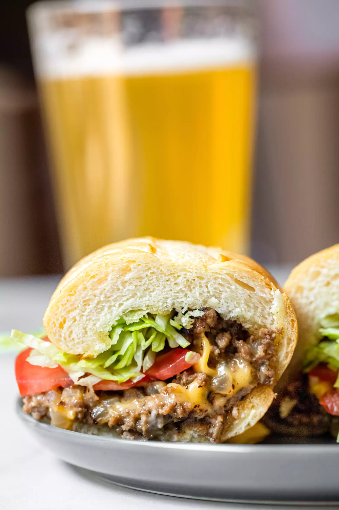

Cheeseburger Casserole

PREP TIME; 15 mins
COOK TIME: 30 mins TOTAL TIME: 45 mins SERVINGS 6 to 8 servings.
chopped cheese
COOK TIME: 30 mins TOTAL TIME: 45 mins SERVINGS 6 to 8 servings.
Creamy Southern Lima_Beans

COOK TIME: 30 mins TOTAL TIME: 45 mins SERVINGS 6 to 8 servings.